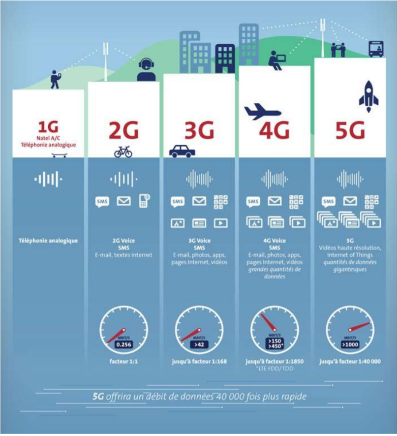

Bonjour et bienvenue sur notre site présentant le résultat de notre TPE consacré à la 5G. Nous sommes 3 élèves de 1ère S3 et notre TPE porte sur les deux matières scientifiques que sont la physique et les mathématiques.
L’expansion de la technologie et notamment du numérique, depuis les années 2000, nous a conduit à nous intéresser à la 5G. Les réseaux internet sont un sujet d’actualité complexe. Leur fonctionnement et leurs usages, peu connus de tous, dans la vie quotidienne, ont évolué au fur et à mesure des années.
Dans un futur proche, où le transfert d’informations est voué à exploser, il devient donc urgent de développer une nouvelle génération de réseaux mobiles, semblant ambitieuse (considérée comme une “révolution”) alors même qu’elle n'est même pas encore mise en place. La technologie de la 5ème génération, ou tout simplement 5G, sera une nouvelle technologie mobile. Les fonctionnalités qui sont offertes par celle-ci changeront complètement l'idée traditionnelle que nous avons des smartphones.
Aussi ce sujet nous a amené à nous poser la question suivante : la 5G pourra t-elle répondre aux besoins exponentiels, en matière de télécommunications ?
Les domaines abordés dans cette dernière partie ne sont pas exhaustifs. En effet, en 2019, nous n’avons aucune idée de toutes les technologies et appareils qui pourront solliciter la 5G dans le futur. Nous nous basons donc dans notre étude sur quelques exemples précis.

La télécommunication mobile est apparu dans les années 1980 avec la 1G. Cette première génération de système cellulaire est caractérisée par un signal analogique qui permettait seulement de communiquer vocalement.
Par la suite, la 1G laisse place à la 2g qui instaure l’échange de messages (SMS) mais aussi les premières navigations sur le internet bien qu’étant à très bas débits.
A partir de la 2G, le signal analogique est remplacée par un signal numérique. Le signal analogique est retranscrit à l’identique alors que le signal numérique est traduit en langage binaire (Bits). Ces premiers réseaux mobiles, bien qu’ayant été sollicités dans les années 2000, ne sont plus ou presque plus utilisés de nos jours et les pays envisagent de fermer les services 1G et 2G d’ici 2020.
L’arrivée de la troisième génération de réseau mobile va développer grandement l’accès à internet sur son téléphone ou encore le visionnage de vidéos.
Puis vient la 4g, la génération du réseau mobile actuelle, en place dans une partie de la France (surtout les villes). Cette génération vient encore augmenter les capacités de transfert de données en réduisant temps de latence.